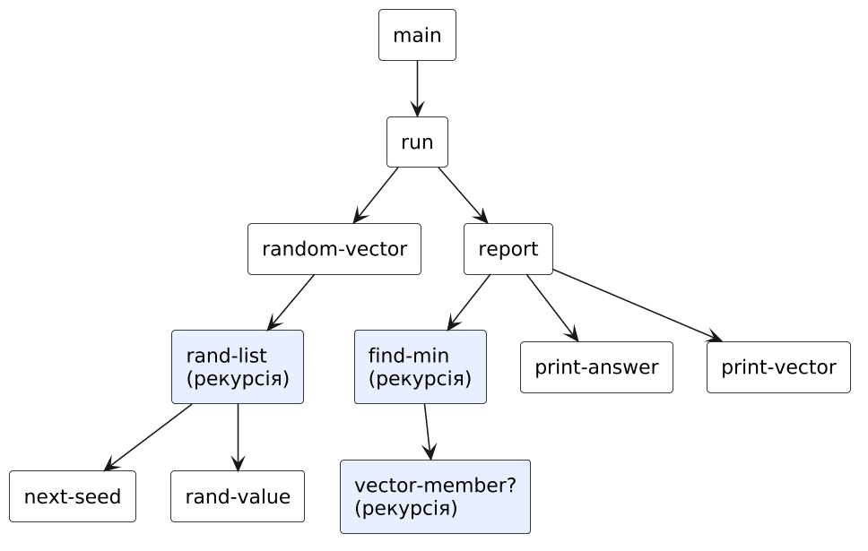
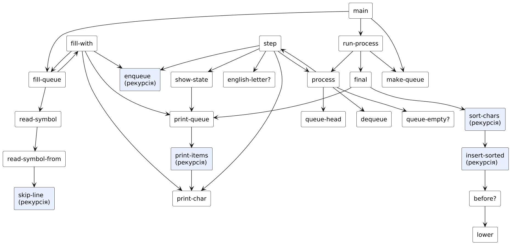
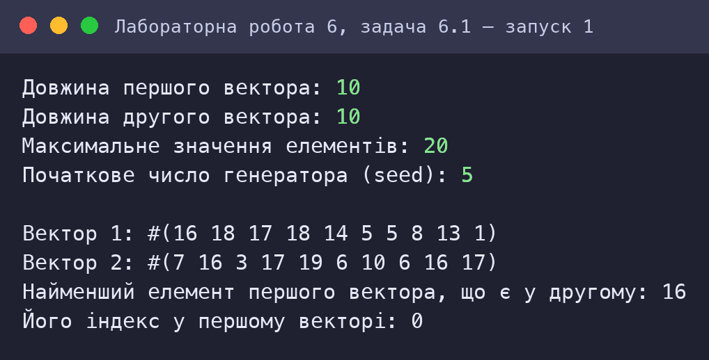
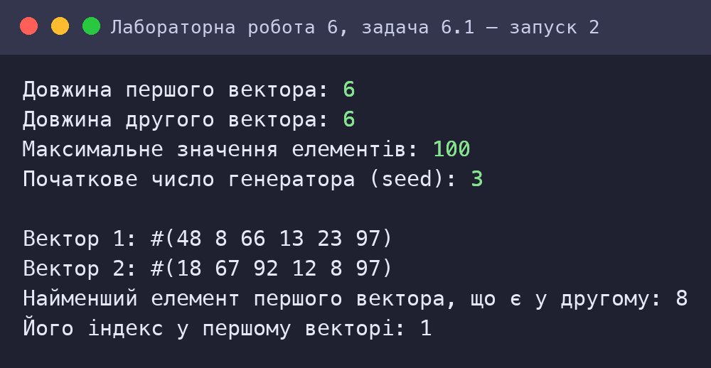
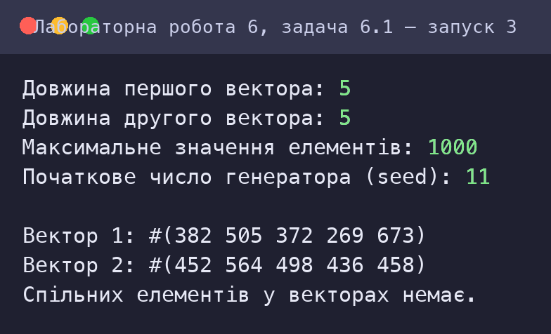
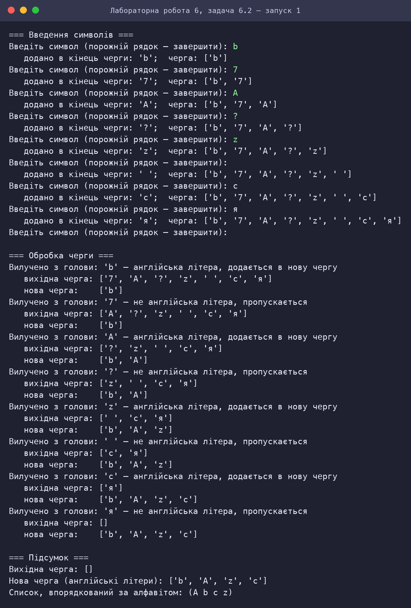
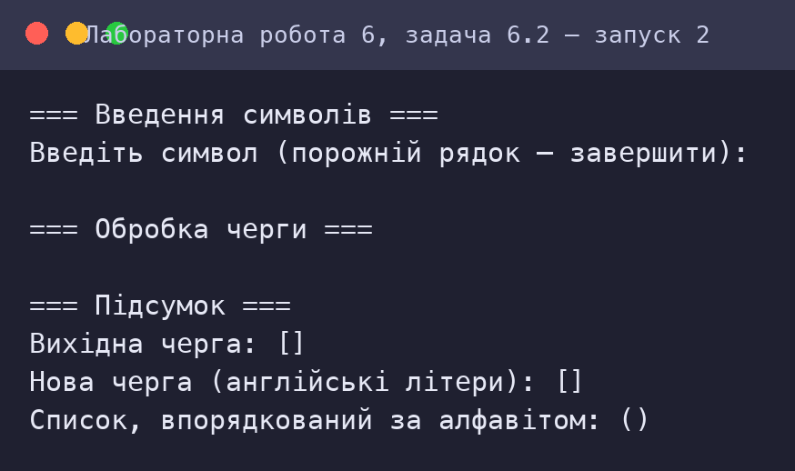

Обробка структур типу векторів і матриць, стеків та черг мовами функціонального програмування
Варіант 3
Київ — 2026
Мета роботи
Мета подана за методичними вказівками до лабораторних занять з дисципліни «Функціональне програмування» (Київ, 2025).
Умова завдання
Варіант 3. Умова наведена з методичних вказівок.
Задача 6.1
3.1 Генерувати елементи двох векторів псевдовипадковими цілими числами. Знайти найменший серед тих елементів першого вектору, які співпадають із значеннями елементів другого вектору. Вивести на екран вектори, найменший елемент та його індекс.
Задача 6.2
3.2 Реалізувати чергу символів із демонстрацією принципу FIFO (First In, First Out);
- користувач послідовно вводить символи з клавіатури. Після кожного введення виводити поточний стан черги, показуючи, що новий символ додається в її кінець;
- при обробці вихідної черги вибирати і аналізувати символи з голови черги. Якщо символ є англійською літерою, додавати його в нову чергу. Якщо символ не є англійською літерою — пропускати його. Після кожної операції вилучення символу з вихідної черги та додавання його в нову чергу показувати, який символ було вилучено, поточний стан вихідної та нової черги;
- після завершення обробки вихідної черги вивести фінальний вміст обох черг, демонструючи принцип FIFO;
- перетворити нову чергу з англійськими літерами у список, відсортувавши його за алфавітом.
Аналіз задачі та математичне забезпечення
Задача 6.1: Два вектори: найменший спільний елемент
Генератор псевдовипадкових чисел
Власний лінійний конгруентний генератор: sk+1 = (a·sk + c) mod m, a = 1 103 515 245, c = 12 345, m = 231. Елемент вектора: xk = ((sk div 65536) mod M) + 1 ∈ [1; M]. Старші біти використовуються тому, що молодші біти ЛКГ мають короткий період. Початкове число seed задається користувачем, тому прогін відтворюваний; другий вектор будується із seed + 1.
Алгоритм пошуку
Для кожного елемента v1[i] перевіряється належність до другого вектора (vector-member?, лінійний пошук за індексом); серед збігів зберігається мінімальне значення та індекс його першого входження. Один прохід по першому вектору: O(n₁·n₂). Рекурсія — хвостова за індексом i із акумуляторами best і best-i; якщо збігів немає, повертається #f і виводиться повідомлення.
Індексація — з нуля, як у vector-ref. Вектори створюються функціонально: (list->vector (rand-list …)), без змін елементів на місці.
Задача 6.2: Черга символів (FIFO)
Абстракція «черга»
Чергу подано списком, голова — перший елемент. Операції: make-queue, queue-empty?, queue-head, dequeue (cdr) та enqueue (додавання в кінець). Принцип FIFO: елемент, що ввели першим, обробляється першим — це видно з протоколу вилучень (queue-head завжди повертає найстаріший елемент).
Три етапи
- Введення: символи вводяться по одному (кожен у рядку; порожній рядок — завершення); після кожного введення друкується стан черги. Процедура
read-symbolчитає перший символ рядка та пропускає решту. - Обробка:
processбере голову вихідної черги: англійська літера (A–Z, a–z) додається в нову чергу, інші символи пропускаються. Після кожної операції друкуються вилучений символ і стани обох черг. Рекурсія хвостова за двома чергами. - Сортування: нова черга перетворюється на список і впорядковується вставками за алфавітом без урахування регістру; сортування стабільне (однакові літери зберігають початковий порядок, наприклад A перед a, якщо A була раніше). Складність O(k²).
Складність
Додавання в кінець списку — O(n), отже введення n символів — O(n²). Для швидкого enqueue використовують пару списків (front, rear) з амортизованою O(1); для лабораторної обрано прозоре подання одним списком.
HIPO-діаграма (схема виклику процедур)
Діаграма показує ієрархію викликів процедур (стрілка A → B означає, що A викликає B); блоки з рекурсією виділено. Допоміжні процедури введення даних (ask-…) для наочності опущено.
Задача 6.1: Два вектори: найменший спільний елемент

| Процедура | Вхід (Input) | Обробка / вихід (Process → Output) |
|---|---|---|
main | n₁, n₂, max, seed | виклик run |
random-vector / rand-list | n, seed, max | вектор псевдовипадкових чисел |
next-seed / rand-value | seed | наступний стан і значення |
find-min | v1, v2, i, best, best-i | (мінімум . індекс) або #f |
vector-member? | v, x, i | чи є x у векторі |
report / print-answer | v1, v2 | виведення |
Задача 6.2: Черга символів (FIFO)

| Процедура | Вхід (Input) | Обробка / вихід (Process → Output) |
|---|---|---|
main | — | введення, обробка, підсумок |
fill-queue / fill-with / read-symbol | черга | введення символів зі станом черги |
process / step | src, dst | обробка FIFO-черги з виведенням кроків |
enqueue / dequeue / queue-head | черга | операції черги |
english-letter? | символ | чи англійська літера |
sort-chars / insert-sorted | список символів | алфавітне стабільне сортування |
Код
Код наведено текстом (не скріншотом). Файли можна завантажити та запустити в Dr.Racket (мова R5RS: Мова → Обрати мову → Other languages → R5RS) або в Guile.
Задача 6.1: Два вектори: найменший спільний елемент
⬇ task1_vectors.scm;; =====================================================================
;; ЛР6, варіант 3, задача 3.1. Два вектори, заповнені псевдовипадковими цілими числами.
;; Знайти найменший серед елементів ПЕРШОГО вектора, які збігаються зі значеннями
;; елементів ДРУГОГО вектора. Вивести вектори, знайдений елемент та його індекс
;; (індекс у першому векторі, відлік з нуля; береться перше входження).
;; Використано дозволені процедури: vector, vector-ref, vector-length, list->vector.
;; Датчик випадкових чисел — власний лінійний конгруентний генератор.
;; =====================================================================
;; ---------- Псевдовипадкові числа ----------
(define (next-seed s) (remainder (+ (* s 1103515245) 12345) 2147483648))
(define (rand-value s max) (+ 1 (remainder (quotient s 65536) max))) ; 1..max
;; Список із n псевдовипадкових чисел 1..max (seed — початковий стан)
(define (rand-list n seed max)
(if (= n 0)
'()
(cons (rand-value (next-seed seed) max)
(rand-list (- n 1) (next-seed seed) max))))
(define (random-vector n seed max)
(list->vector (rand-list n seed max)))
;; ---------- Пошук ----------
;; Чи входить x у вектор v (перевірка індексів від i)
(define (vector-member? v x i)
(cond ((= i (vector-length v)) #f)
((= (vector-ref v i) x) #t)
(else (vector-member? v x (+ i 1)))))
;; Перебір першого вектора: best — найменший збіг (або #f), best-i — його індекс
;; Результат: (значення . індекс) або #f
(define (find-min v1 v2 i best best-i)
(cond ((= i (vector-length v1))
(if best (cons best best-i) #f))
((and (vector-member? v2 (vector-ref v1 i) 0)
(or (not best) (< (vector-ref v1 i) best)))
(find-min v1 v2 (+ i 1) (vector-ref v1 i) i))
(else (find-min v1 v2 (+ i 1) best best-i))))
;; ---------- Виведення ----------
(define (print-vector v) (display v) (newline))
;; ---------- Інтерфейс ----------
(define (main)
(display "Довжина першого вектора: ") (ask-n2 (read)))
(define (ask-n2 n1)
(display "Довжина другого вектора: ") (ask-max n1 (read)))
(define (ask-max n1 n2)
(display "Максимальне значення елементів: ") (ask-seed n1 n2 (read)))
(define (ask-seed n1 n2 max)
(display "Початкове число генератора (seed): ") (run n1 n2 max (read)))
(define (run n1 n2 max seed)
(newline)
(report (random-vector n1 seed max) (random-vector n2 (+ seed 1) max)))
(define (report v1 v2)
(display "Вектор 1: ") (print-vector v1)
(display "Вектор 2: ") (print-vector v2)
(print-answer (find-min v1 v2 0 #f 0)))
(define (print-answer r)
(if r
(begin (display "Найменший елемент першого вектора, що є у другому: ") (display (car r)) (newline)
(display "Його індекс у першому векторі: ") (display (cdr r)) (newline))
(begin (display "Спільних елементів у векторах немає.") (newline))))
Задача 6.2: Черга символів (FIFO)
⬇ task2_queue.scm;; =====================================================================
;; ЛР6, варіант 3, задача 3.2. Черга символів (FIFO).
;; 1) Користувач вводить символи по одному (кожен — в окремому рядку, порожній рядок —
;; кінець введення). Після кожного введення виводиться стан черги: новий символ додається в кінець.
;; 2) Обробка вихідної черги: символ береться з голови; якщо це англійська літера, він
;; додається в нову чергу, інакше пропускається. Після кожної операції показується, який символ
;; вилучено, та стан обох черг.
;; 3) Після обробки виводяться підсумкові черги; нова черга перетворюється на список,
;; впорядкований за алфавітом.
;; Чергу подано списком: голова черги — перший елемент, додавання — в кінець.
;; Бібліотек обробки черг не використовується.
;; =====================================================================
;; ---------- Операції черги ----------
(define (make-queue) '())
(define (queue-empty? q) (null? q))
(define (queue-head q) (car q))
(define (dequeue q) (cdr q))
(define (enqueue q x) ; додавання в кінець черги
(if (null? q) (list x) (cons (car q) (enqueue (cdr q) x))))
;; ---------- Символи ----------
(define (english-letter? c)
(or (and (char>=? c #\a) (char<=? c #\z))
(and (char>=? c #\A) (char<=? c #\Z))))
(define (lower c) ; нижній регістр для англійських літер
(if (and (char>=? c #\A) (char<=? c #\Z))
(integer->char (+ (char->integer c) 32))
c))
;; ---------- Виведення черги ----------
(define (print-queue q)
(display "[")
(print-items q)
(display "]"))
(define (print-items q)
(cond ((null? q) #t)
((null? (cdr q)) (print-char (car q)))
(else (print-char (car q)) (display ", ") (print-items (cdr q)))))
(define (print-char c) (display "'") (display c) (display "'"))
;; ---------- Введення ----------
;; Читає один рядок: повертає перший символ рядка або #f, якщо рядок порожній
(define (read-symbol)
(read-symbol-from (read-char)))
(define (read-symbol-from c)
(if (or (eof-object? c) (char=? c #\newline))
#f
(begin (skip-line (read-char)) c)))
(define (skip-line c)
(if (or (eof-object? c) (char=? c #\newline))
#t
(skip-line (read-char))))
;; Заповнення вихідної черги
(define (fill-queue q)
(display "Введіть символ (порожній рядок — завершити): ")
(fill-with q (read-symbol)))
(define (fill-with q c)
(if c
(begin (display " додано в кінець черги: ") (print-char c) (display "; черга: ")
(print-queue (enqueue q c)) (newline)
(fill-queue (enqueue q c)))
q))
;; ---------- Обробка ----------
(define (process src dst)
(if (queue-empty? src)
(list src dst)
(step (queue-head src) (dequeue src) dst)))
(define (step c src dst)
(display "Вилучено з голови: ") (print-char c)
(if (english-letter? c)
(begin (display " — англійська літера, додається в нову чергу") (newline)
(show-state src (enqueue dst c))
(process src (enqueue dst c)))
(begin (display " — не англійська літера, пропускається") (newline)
(show-state src dst)
(process src dst))))
(define (show-state src dst)
(display " вихідна черга: ") (print-queue src) (newline)
(display " нова черга: ") (print-queue dst) (newline))
;; ---------- Сортування за алфавітом ----------
;; «менше або дорівнює» за кодом нижнього регістру: символ ставиться перед рівними — сортування стабільне
(define (before? a b) (<= (char->integer (lower a)) (char->integer (lower b))))
(define (insert-sorted c sorted)
(cond ((null? sorted) (list c))
((before? c (car sorted)) (cons c sorted))
(else (cons (car sorted) (insert-sorted c (cdr sorted))))))
(define (sort-chars lst)
(if (null? lst) '() (insert-sorted (car lst) (sort-chars (cdr lst)))))
;; ---------- Головна процедура ----------
(define (main)
(display "=== Введення символів ===") (newline)
(run-process (fill-queue (make-queue))))
(define (run-process src)
(newline)
(display "=== Обробка черги ===") (newline)
(final (process src (make-queue))))
(define (final r)
(newline)
(display "=== Підсумок ===") (newline)
(display "Вихідна черга: ") (print-queue (car r)) (newline)
(display "Нова черга (англійські літери): ") (print-queue (cadr r)) (newline)
(display "Список, впорядкований за алфавітом: ") (display (sort-chars (cadr r))) (newline))
Скріншот роботи та результату
Знімки консолі відтворюють роботу програм: запуск виконано в інтерпретаторі Guile 3.0 (R5RS-сумісний); введені користувачем значення виділено зеленим. Для кожного запуску наведено умови та результат.
Задача 6.1: Два вектори: найменший спільний елемент



Задача 6.2: Черга символів (FIFO)


Оцінка достовірності результату
Вектори: генерація, найменший спільний елемент та індекс
| Вхідні дані | Результат програми | Еталон | |
|---|---|---|---|
| n1=10, n2=10, max=20, seed=5 | (16 . 0) #(16 18 17 18 14 5 5 8 13 1) | (16 . 0) | ✓ |
| n1=6, n2=6, max=100, seed=3 | (8 . 1) #(48 8 66 13 23 97) | (8 . 1) | ✓ |
| n1=15, n2=12, max=15, seed=8 | (1 . 8) #(5 15 15 14 2 9 7 14 1 5 7 9 3 7 8) | (1 . 8) | ✓ |
| n1=5, n2=5, max=1000, seed=11 | #f #(382 505 372 269 673) | #f | ✓ |
| n1=20, n2=3, max=30, seed=77 | (2 . 13) #(28 21 20 20 20 30 8 30 16 21 13 7 29 2 20 13 12 10 21 27) | (2 . 13) | ✓ |
| n1=1, n2=1, max=1, seed=1 | (1 . 0) #(1) | (1 . 0) | ✓ |
6 / 6 збігів.
Сортування символів нової черги за алфавітом (стабільне)
| Вхідні дані | Результат програми | Еталон | |
|---|---|---|---|
| bAzc | A b c z | A b c z | ✓ |
| aABb | a A B b | a A B b | ✓ |
| ZyXw | w X y Z | w X y Z | ✓ |
| (порожня) | ✓ |
4 / 4 збігів.
Перевірка коду інструментами штучного інтелекту (простота, Clean code)
Аналіз коду виконав ШІ-асистент Claude (Anthropic): прочитано кожну програму, перевірено її за критеріями чистого коду й за вимогами завдання, автоматично пораховано метрики та пошук заборонених конструкцій. Нижче — критерії, вимірювання й висновки; випадки, де за результатами перевірки код було змінено, позначені «знайдено й виправлено».
Критерії
| Критерій | Що перевірялось |
|---|---|
| Іменування | імена відображають зміст (дієслова для дій, іменники для даних) |
| Малі функції | одна процедура — одна відповідальність; довжина процедур |
| Відсутність побічних ефектів | немає set!, змінних стану; значення передаються параметрами |
| Відповідність обмеженням | заборонені конструкції (let, let*, letrec, do, while, for, loop) |
| Простота | немає дублювання обчислень, зайвих абстракцій; коментарі пояснюють «чому», а не «що» |
| Коректність і тестованість | чисті процедури можна перевірити окремо (див. розділ «Оцінка достовірності») |
Задача 6.1: Два вектори: найменший спільний елемент
| Рядків | Рядків коду | Рядків коментарів | Процедур | Середня довжина | Максимальна довжина |
|---|---|---|---|---|---|
| 68 | 41 | 16 | 14 | 2.9 | 7 |
| let | let* | letrec | set! | do | while/for/loop |
|---|---|---|---|---|---|
| 0 | 0 | 0 | 0 | 0 | 0 |
Висновки перевірки
- Генерація, пошук і виведення відокремлені; псевдовипадковий генератор — окрема пара процедур, що спрощує тестування й відтворюваність.
- Вектори не змінюються після створення; використано лише дозволені процедури (
vector-ref,vector-length,list->vector). - Зауваження:
vector-member?— лінійний пошук (O(n₂)); для великих векторів доцільно відсортувати другий вектор і використати бінарний пошук або хеш-таблицю.
Задача 6.2: Черга символів (FIFO)
| Рядків | Рядків коду | Рядків коментарів | Процедур | Середня довжина | Максимальна довжина |
|---|---|---|---|---|---|
| 113 | 77 | 22 | 24 | 3.2 | 9 |
| let | let* | letrec | set! | do | while/for/loop |
|---|---|---|---|---|---|
| 0 | 0 | 0 | 0 | 0 | 0 |
Висновки перевірки
- Інтерфейс черги (
make-queue,enqueue,dequeue,queue-head) відокремлений від програмної логіки обробки. - Знайдено й виправлено (за результатами автоматичної перевірки): перша версія сортування була нестабільною — рівні за алфавітом символи (A і a) міняли порядок; умова
before?змінена на «менше або дорівнює», після чого незалежна перевірка проти Python пройшла. - Зауваження:
enqueueкопіює список (O(n)); для великих черг потрібне подання «два списки». - Обробка введення нестандартних символів (кирилиця, пробіл, цифри) перевірена — вони пропускаються без помилок.
Примітка: метрики розраховано автоматично; змістовні висновки — експертна оцінка асистента. Перевірку слід розглядати як допоміжну: остаточну відповідальність за код несе автор.
Висновок
Реалізовано обробку векторів (генерація псевдовипадкових чисел власним ЛКГ, пошук найменшого спільного елемента та його індексу) і чергу символів із демонстрацією принципу FIFO: введення зі станом після кожної операції, відбір англійських літер у нову чергу та алфавітне стабільне сортування. Показано, що чергу можна подати незмінним списком, а всі стани передавати параметрами. Автоматичні перевірки (10 порівнянь із Python) виявили і допомогли виправити нестабільність сортування; після виправлення всі пройдено.